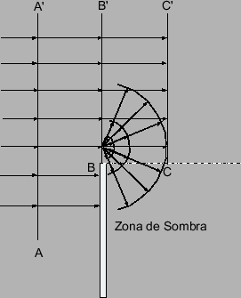
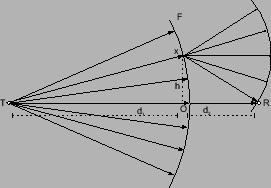

Siguiente: Elipsoides de Fresnel
Subir: Principio de Huygens
Anterior: Principio de Huygens
Índice General
Propagación por difracción
Ahora bien, el principio introducido en la sección 4.1
es válido también cuando el frente de onda se encuentra con un
obstáculo. En ese caso, y suponiendo que dicho obstáculo es de un
material perfectamente conductor (en condiciones de alta
frecuencia, esta hipótesis no es muy restrictiva pues la mayoría
de los materiales reflejan las ondas de frecuencia alta), se puede
utilizar el principio de Huygens para hallar la expresión del
campo más allá de dicho obstáculo.
Figura 4.2:
El principio de Huygens cuando hay un obstáculo presente
|

|
En la figura 4.2 se puede apreciar cómo el
principio de Huygens muestra que las ondas se propagarán también en
la zona de sombra (es decir, de la semirrecta hacia abajo), al
contrario de lo que la teoría de rayos simple indica. Este fenómeno
se llama difracción.
Figura 4.3:
Geometría definiendo la ubicación del transmisor y el
receptor, el frente principal y uno secundario
|

|
Siguiente: Elipsoides de Fresnel
Subir: Principio de Huygens
Anterior: Principio de Huygens
Índice General
SAPO